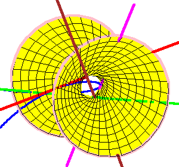

Frank Sottile
Texas A&M University
18 November 2005
Séminaire Géométrie, Université de Savoie


|
The Shapiro Conjecture Frank Sottile Texas A&M University 18 November 2005 Séminaire Géométrie, Université de Savoie |
|
|||
|
||||
|
About 10 years ago, Boris Shapiro and Michael Shapiro
made a remarkable conjecture about real solutions to
geometric problems coming from the classical Schubert calculus.
While the conjecture remains open, there is truly overwhelming
computational evidence supporting it, and Eremenko and Gabrielov
proved it for Grassmannians of 2-planes, where the conjecture is
the appealing statement that a rational function with only real
critical points must be real.
In my talk, I will introduce the Shapiro conjecture and discuss what we know about it. This includes a simple counterexample and a refinement which is supported by massive experimental evidence. |
 |